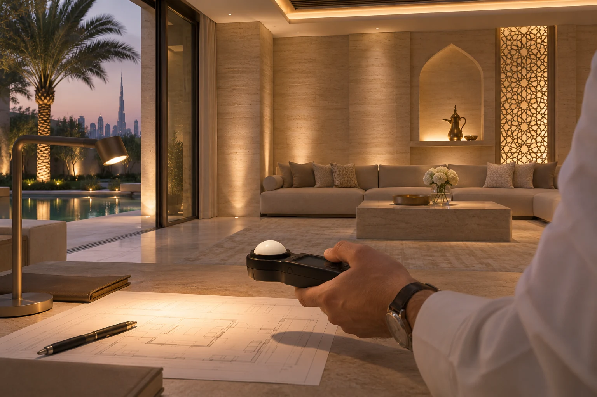

The Hidden Math of Lux Levels: Local Municipality Compliance vs. Aesthetic Lighting
A practical lux calculation guide for Dubai and Abu Dhabi projects. Read DIALux uniformity, compare task targets and balance approvals with architectural lighting.

A Dubai villa entrance can have a beautifully illuminated stone wall and a dark step immediately below it. Equally, a DIALux report can show a satisfactory average while the finished room looks flat. The designer has to answer two distinct questions in the same scheme: does enough light reach the relevant surfaces, and how does the space look from the positions people occupy?
Establish which requirement applies
Start the lighting design brief with a schedule of spaces. For each space, record the authority or client document, edition, clause or table, activity, calculation plane and target. Dubai Building Code Part H addresses the indoor environment, including artificial lighting and controls. In Abu Dhabi, DMT’s Sahel Public Realm Rating System refers applicable public open spaces and streetscapes to its lighting requirements and the lighting manual. A streetscape requirement has a different scope from a private villa majlis.
For the MEP consultant, this distinction matters at the site boundary. The driveway within the plot, the public pavement beside it and an emergency escape route may be assessed under different criteria. Confirm the applicable approval route and project documents with the responsible consultant. The SLL Code can supply a task-lighting reference where applicable. Record how that reference was selected and keep the authority submission criteria identifiable.
Read the calculation grid before its headline number
One lux is one lumen per square metre. On a regular equal-area calculation grid, the arithmetic mean of the point readings gives the average illuminance. Overall uniformity U₀ is the minimum divided by the average. Always check which ratio the report uses: minimum divided by maximum answers a different question. Record the task-plane height, wall-zone exclusions, maintenance factor and lighting scene alongside the result.
Consider a washroom working plane with a project target of 200 lx and U₀ of 0.40. Its report shows 204 lx average, 77.6 lx minimum and 448 lx maximum. The average clears its target, but 77.6 ÷ 204 is approximately 0.38. At the same average, the minimum would need to reach 81.6 lx to achieve 0.40. This worked example illustrates a task check; the applicable target comes from the project’s own reference schedule.
Fix the dark point, then recover the visual hierarchy
Open the isolux contour or false-colour view and locate the low readings. Check whether they fall behind a partition, under a door head or outside the defined activity. If they belong to the assessed area, examine spacing, beam distribution and obstructions. Scaling every fixture up by the same percentage scales the minimum and average together, leaving their ratio essentially the same. Redistributing light from a hot spot into the darker section can be more effective.
Then stand at the entry. A lit vertical surface helps the eye read the room, while a shielded local source can reveal texture without flattening every wall. Keep mirror lighting, circulation lighting and decorative accents on appropriate circuits. Test the calculation scene again after changing optics or aiming. Record a separate evening hospitality scene if the client wants a softer atmosphere for entertaining.
Submit a result the reviewer can trace
Give each comparison row the storey, full room name, working-plane index, light scene and source PDF page. Carry repeated rooms separately. Show achieved and required average lux and U₀, plus the standard reference. A “pass” for those two metrics leaves glare, emergency lighting, energy use and other applicable checks to their own records.
During commissioning, recall the documented scene and use the same plane and point locations. Note daylight, dimming levels, meter details and material changes. Compare a new installation with an appropriate initial prediction where available. The design’s maintained value already includes allowances for future loss. Keeping those conditions visible helps the contractor distinguish an aiming problem from a difference in assumptions.
Use the OMEGALUX Lux comparison tool to extract the working planes from Calculation objects / Light scene 1 across the report, including continuation pages. Its branded output gives the consultant a traceable starting point for that review.
Discuss your lighting project with the studio ↗